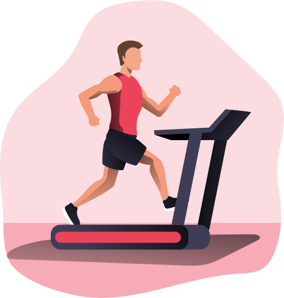

BIENVENIDOS
Salir
Seccion de Actividades
Actividades para la cuarentena
Seccion dedicada al entretenimiento de las personas durante esta cuarentena.

Seccion de Graficas
Graficas hasta el momento
Seccion dedicada a una serie de graficas que tocan en el tema del coronavirus, informando la cifra de contagiados.
 Seccion de Mapas
Mapas de COVID-19
Seccion dedicada a los diferentes mapas creados por gente especializada en el tema del coronavirus, que busca informar la propagacion de este virus dañino el covid-19, conoce un poco de la situacion actual en el mundo desde esta forma grafica de ver los casos en otros paises.
Seccion de Higiene
Recomendaciones higienicas
Seccion dedicada a los cuidados necesarios que la poblacion deberia de conocer en medio de esta pandemia mundial, en este apartado se explicaran los cuidados recomendados por parte de organizaciones mundiales de la salud para cuidarnos al momento de salir de casa, al llegar a casa y buenos tips.
Seccion de Mapas
Mapas de COVID-19
Seccion dedicada a los diferentes mapas creados por gente especializada en el tema del coronavirus, que busca informar la propagacion de este virus dañino el covid-19, conoce un poco de la situacion actual en el mundo desde esta forma grafica de ver los casos en otros paises.
Seccion de Higiene
Recomendaciones higienicas
Seccion dedicada a los cuidados necesarios que la poblacion deberia de conocer en medio de esta pandemia mundial, en este apartado se explicaran los cuidados recomendados por parte de organizaciones mundiales de la salud para cuidarnos al momento de salir de casa, al llegar a casa y buenos tips.